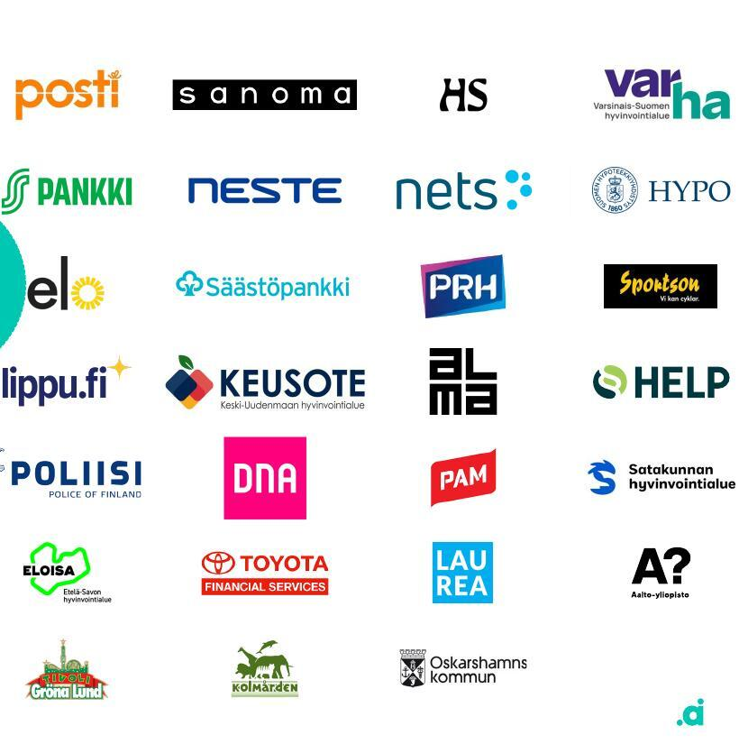
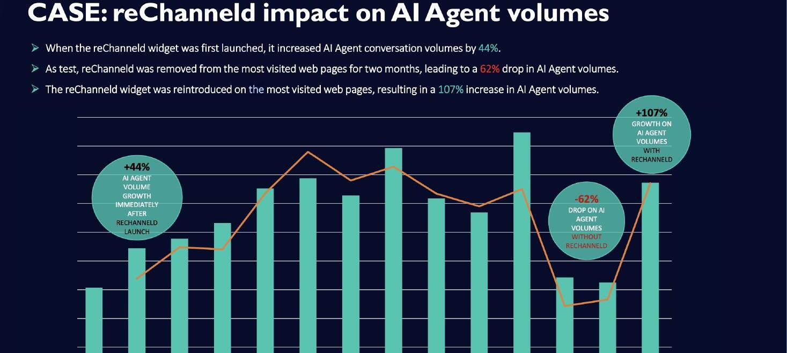

reChanneld already has results most SaaS companies would envy: −45% phone calls at Lippu.fi, CSAT up from 50% to 84% at CDON, and +107% AI-agent usage when the widget is live. Almost nobody outside your sales calls sees them.
Based on my conversation with Touko, October 2026.
Concrete target: a relaunched website message, 3 case one-pagers, 24 LinkedIn posts, 1 explainer video, 10 outbound packs sent, and a steady flow of qualified demo meetings.
I've worked in conversational marketing and sales tech at Leadoo and Videobot, so I know how this market buys. I also make explainer videos. Touko has already seen my work: in two weeks I built account-based packs for DC Thomson, Reach, the Mirror, the Express and the Manchester Evening News, each built on the prospect's real website (see page 10).
The decision needed: agree the scope and option (page 11), and the start date.
Everything on this page comes from your current sales deck. None of it is used in public marketing yet.
| Customer | Headline result | Also | Speed |
|---|---|---|---|
| Lippu.fi (CTS Eventim) | −45% customer service phone calls | 80% of contacts go to the preferred channel; +22% leads | 8 business days |
| S-Bank (3.3M customers) | +83% of contacts go to self-service | 79% of choices hit the bank's preferred option | |
| CDON (>2M customers) | −50% contacts needing a human | CSAT up from 50% to 84%; +93% go to self-service | Immediately |
| Laurea (11,000 students) | +92% of contacts go to self-service | Direct email down from 80% to 49% of tickets | A few weeks |
| Nets / Nexi | 78% nudged to automation and self-service | +12% of contacts became leads | 2 weeks |
| Keusote (public health) | NPS +70 website satisfaction, up from negative | +50% to self-service; −7% phone volume | 6 months |
| AI agent case (unnamed) | +107% AI-agent volume with reChanneld | −62% when the widget was removed for 2 months |

Reference logos from the sales deck, including Posti, Sanoma, HS, Varma, S-Pankki, Neste, Nets, DNA, Toyota Financial Services, Poliisi and Laurea.
This isn't a criticism. It's normal for a product-led team. But each empty channel is a place where a buyer looks for you and finds nothing, or finds a competitor.
| Area | Today | Why it matters | 90-day fix |
|---|---|---|---|
| Positioning | Not written down | Everyone describes reChanneld differently: "nudges", "widget", "channel strategy" | One sentence, three messages and proof for each (page 5) |
| Website | Rebrand in progress, status unknown | Buyers check the site before they reply to Touko | Copy and structure ready for the rebrand, plus a case page |
| Case stories | Only inside the deck | Your strongest asset, and nobody can link to it | 3 one-pagers + web versions (page 6) |
| No activity | Where customer service and digital leaders spend time | 2 posts a week: company page + founders (page 7) | |
| Video | None | "Nudging" is easier to show than to explain | A 60-second explainer (page 8) |
| Outbound | Founder-led, through personal networks | Doesn't scale and doesn't reach the UK | Account packs for 10 target accounts (page 9) |
| Paid ads | None | Only worth it once the message and site work | Not in the first 90 days. Test in Q2. |
| Measurement | None | Without it, marketing turns into opinions | A simple monthly dashboard: reach, visits, demos |
Spending on ads before the message and website are ready wastes money. The plan follows this order.
Draft for discussion with Matti. The wording should come from the founders, and the structure is what matters.
Lippu.fi −45% calls · CDON −50% contacts to humans · Keusote −7% phone volume
CDON CSAT 50% → 84% · Keusote NPS negative → +70 · 87% find it easy
Real-time insight "better than traditional web statistics" (Nets/Nexi)
Many companies bought an AI agent in 2025–26, and their customers still call. Your own data shows why: AI-agent conversations rose 44% when the widget launched, fell 62% when it was removed, and rose 107% when it came back. This is the most timely message you have, and no competitor can claim it.

From the sales deck: "CASE: reChanneld impact on AI Agent volumes".
Suggested campaign line: "Your AI agent is only as good as the traffic you send it."
This uses only facts and the quote from your deck. The same format becomes a web page, a PDF for sales, a LinkedIn post and a 30-second video.
Finland's market-leading ticketing service used reChanneld to guide customers to the right channel before they picked up the phone.
Ticket buyers with questions about events, orders and changes went straight to the phone, even when the answer was available online.
A plug-and-play widget on the customer service pages asks "How can we help?" and guides each topic to the best channel: self-service, automation or a person. Lippu.fi defined its own channel strategy and had it live in eight business days.
The challenge text is my wording based on the deck. Confirm it with Lippu.fi. The photo is from the deck.
Written for the founders' and Touko's personal profiles, which reach further than a company page. Each post is built on one result from the deck.
You bought an AI agent. Your customers still call.
We tested it with one customer: the AI agent with and without reChanneld guiding people to it.
Widget on: +44% AI-agent conversations.
Widget off for two months: −62%.
Widget back: +107%.
An AI agent is only as good as the traffic you send it.
CSAT went from 50% to 84%. Nobody was hired.
CDON, the biggest marketplace in the Nordics, cut contacts that needed a human by 50% right after launch.
Customers didn't get less service. They got the right service faster, and satisfaction followed.
Faster answers are the best CX project there is.
From a negative NPS to +70.
Keusote provides health and social services to more than 200,000 people in 11 municipalities. Their website wasn't working for citizens.
With reChanneld: +50% of contacts to digital self-service, −7% phone volume in six months, and website satisfaction from negative to NPS +70.
| Week | Monday · founder | Thursday · company / Touko |
|---|---|---|
| 1 | "You bought an AI agent. Your customers still call." (AI agent case) | What is a channel strategy? (a 30-second explainer clip) |
| 2 | CDON: CSAT 50% → 84% | Lippu.fi case one-pager (link to the web page) |
| 3 | Why we built reChanneld (founder story) | Keusote: NPS negative → +70 |
| 4 | 3 mistakes in customer service channel design | The explainer video launch |
"Nudging" sounds abstract until you see it. This storyboard shows the problem, the moment of choice and the result. I produce it end to end: script, visuals, voice and captions, with versions for the website, LinkedIn and sales emails.
Each month ends with something you can see and use. A fortnightly 30-minute check-in with Matti and Touko keeps decisions moving.
| Metric | Baseline (today) | Target by day 90 |
|---|---|---|
| Public case stories | 0 | 3 |
| LinkedIn posts (company + founders) | None | 24 |
| Explainer video | None | 1 + 3 cut-downs |
| Target accounts approached with a tailored pack | A few, ad hoc | 10 |
| Qualified demo meetings from marketing and outreach | Not tracked | Tracked monthly. Target set together in week 2 |
These were built for Touko in October 2026, before any agreement, to help open UK accounts. Each one is built on the prospect's real website, with the reChanneld widget shown on top and a business case.
The difference now: real product screenshots from you, so every concept shows the actual reChanneld widget.
All options are fixed-price and monthly, with no long contract. After 90 days we decide together whether to continue, change the scope or make it a permanent role.
About 1 day a week
About 2 days a week · 3 months
5 account packs a month
Ad spend, paid tools, website development and design (the rebrand itself), and travel. I'll recommend whether and when each makes sense.
A 2-hour positioning session with the founders, product access or screenshots, approval rights for customer quotes, and a 30-minute check-in every two weeks.
Prices exclude VAT. Invoiced monthly in advance.